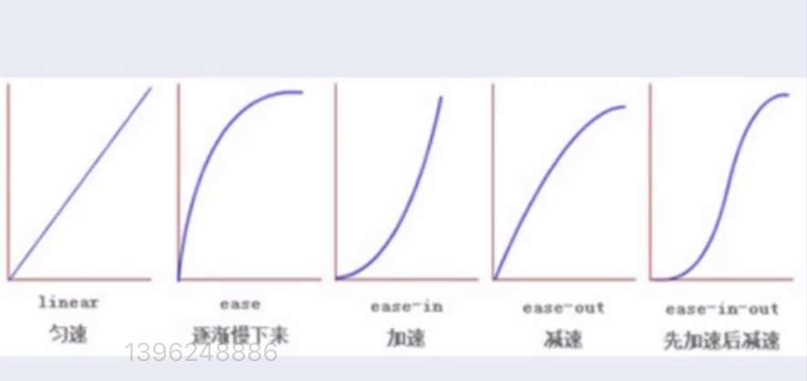

过渡模块：
1、过渡三要素
1.1必须要有属性发生变化
1.2必须告诉系统哪个属性需要执行过渡效果
1.3必须告诉系统过渡效果持续时长
2、格式：
div{
width:100px;
height:100px;
background-color:red;
transition-property:width;
transition-duration:0.5s;
}
div:hover{
width:300px;
}
(:link默认/:visited访问后/:hover鼠标悬浮/:active长按) 爱恨原则：【L】o【v】e 【H】【a】te
3、注意点：
当多个属性需要同时执行过渡效果时，用逗号隔开即可：
transition-property:width,background-color;
transition-duration:5s,5s;
过度模块其他属性：
1、transition-dalay:2s;
告诉系统延迟多少秒之后才开始过渡
2、transition-timing-funtion:linear;
取值:linear/ease/ease-in/ease-out/ease-in-out

过渡模块_连写：
1、连写格式：
transition:过渡属性 过渡时长 运动速度 延迟时间;
2、过渡连写注意点：
2.1如果想给多个属性添加过渡效果，用逗号隔开即可,如：
transition:width 1s linear 0s,background-color 1s linear 0s;
2.2连写的时候可以省略后面的两个参数，保证前面的三要素即可,如：
transition:width 1s,background-color 1s;
2.3如果多个属性运动的速度/延迟的时间/持续时间都一样，可以简写为：
transition:all 0s;